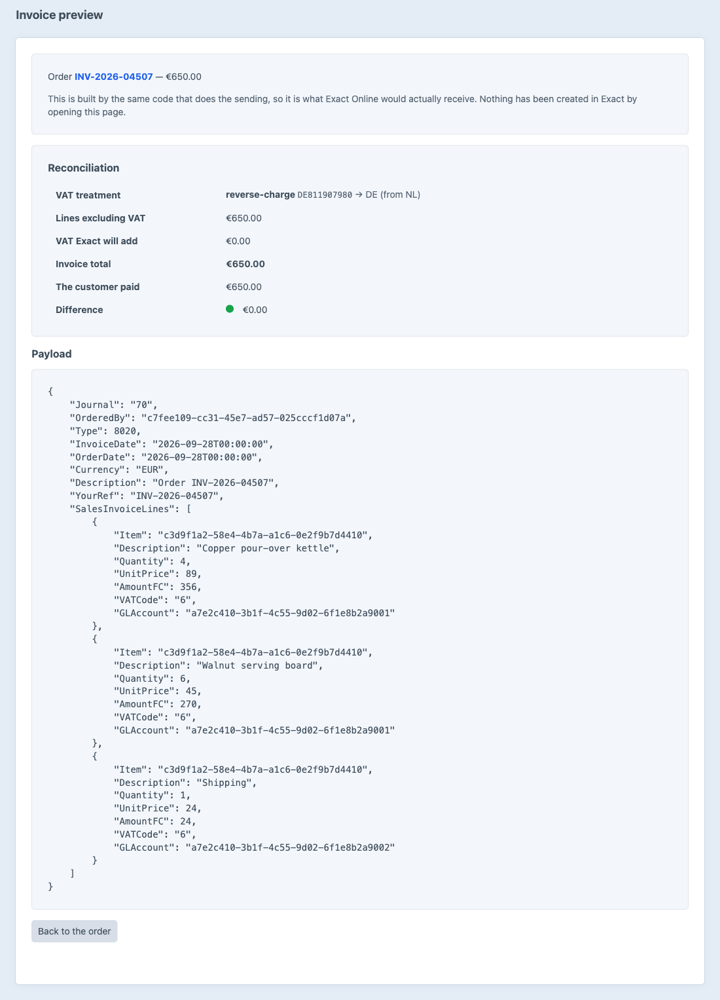
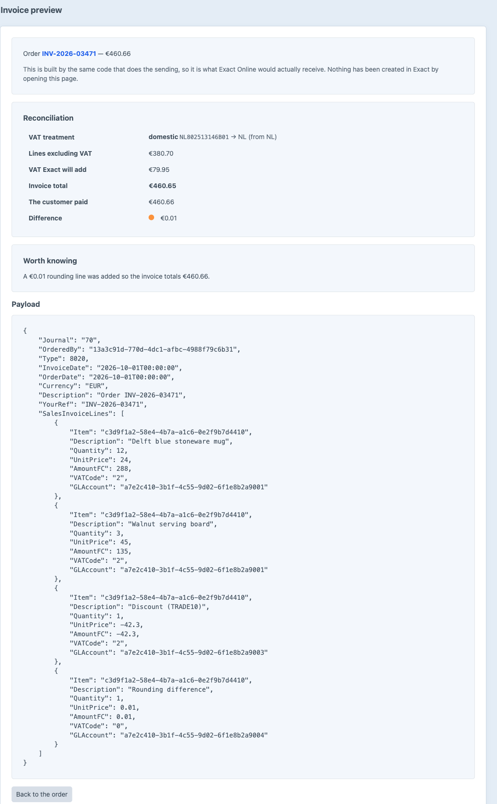
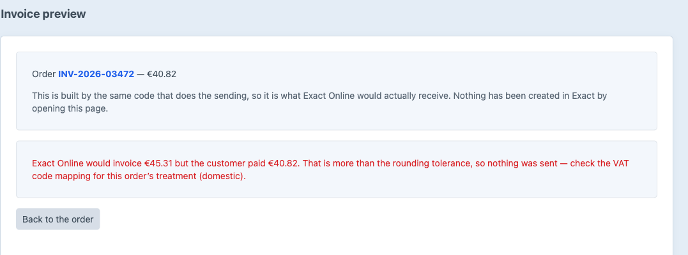
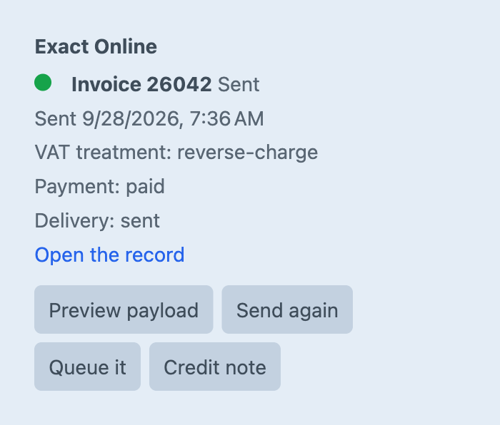
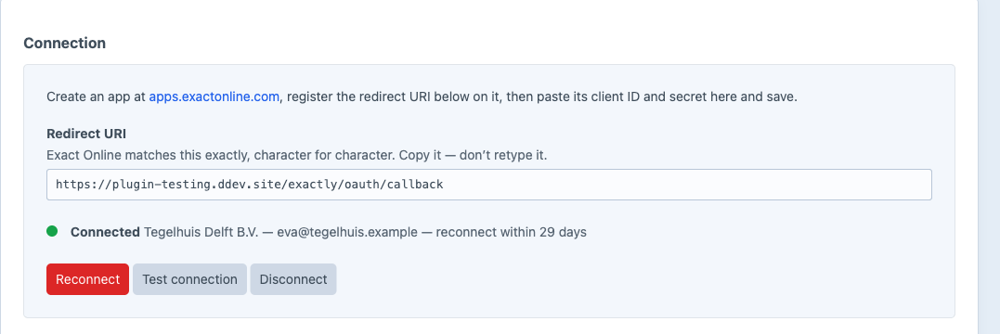
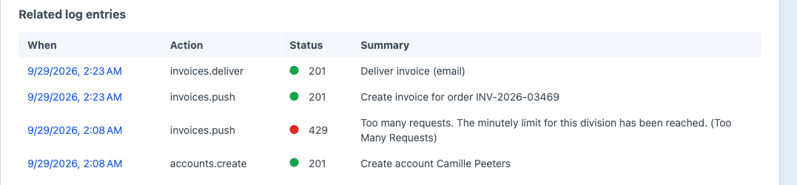
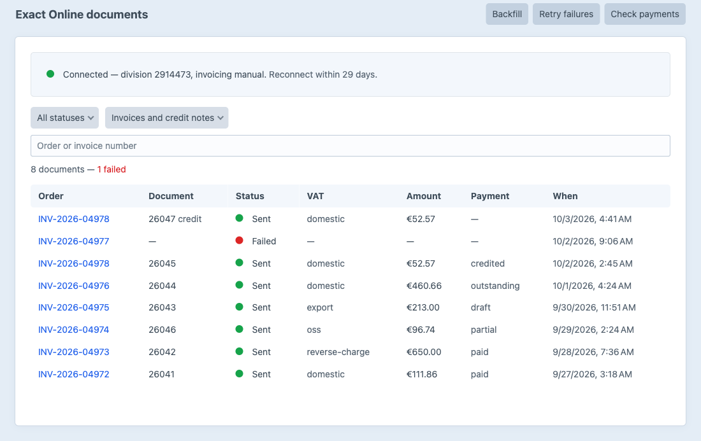

Orders become Exact Online sales invoices — EU VAT worked out, and the total proven before anything is sent.
The preview is built by the same code that does the sending. Not an approximation — the payload itself.

From the shipping country and the customer’s VAT number — read from Craft’s own Organization Tax ID. You map one Exact VAT code to each.
| Customer | VAT number | Treatment | Code |
|---|---|---|---|
| Sanne de VriesUtrecht, NL · consumer | — | Domesticsame country as the administration | 2 21% |
| Brauhaus Kessler GmbHBamberg, DE · business | DE811907980 | Reverse chargeintra-community supply | 6 0% |
| Camille PeetersGent, BE · consumer | — | EU consumer (OSS)destination VAT | OSS 21% |
| Harbor & Pine LtdPortland, US · business | — | Exportoutside the EU | 7 0% |
Numbers are normalised and checked per member state: NL 8025.13.146.B.01 → NL802513146B01 — including EL for Greece and XI for Northern Ireland.
Exact computes VAT from the line codes. Exactly predicts that total and compares it with what the customer actually paid.


A unique index on order, administration and kind — and the button, the queue, a retry and a backfill all go through the same atomic claim.

Exact’s refresh token is single-use. Exactly refreshes under a lock, so two workers can’t kill the connection.


From the screen, or from the console.
